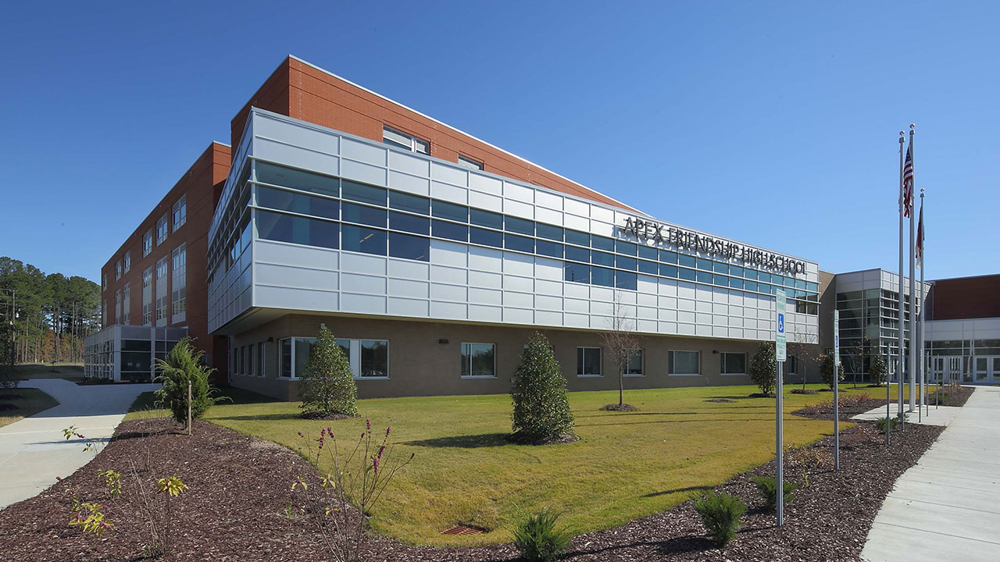
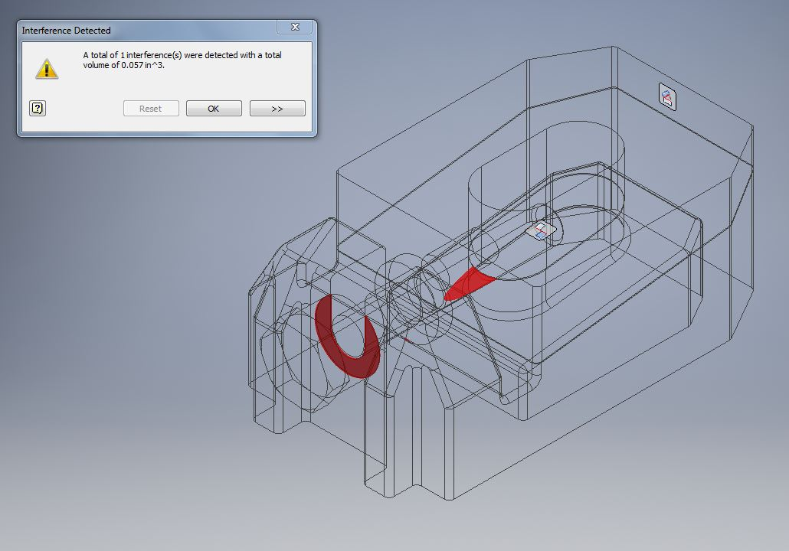
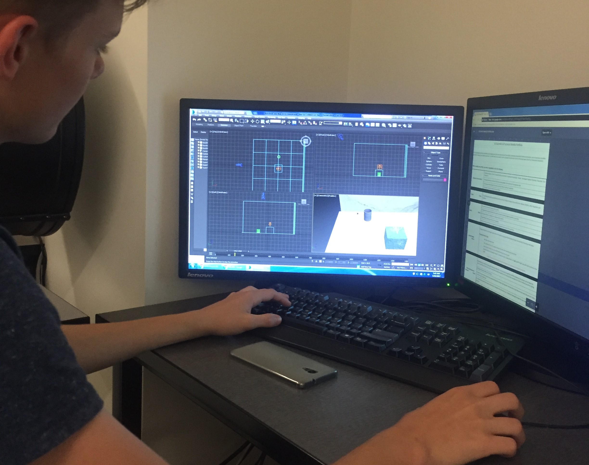
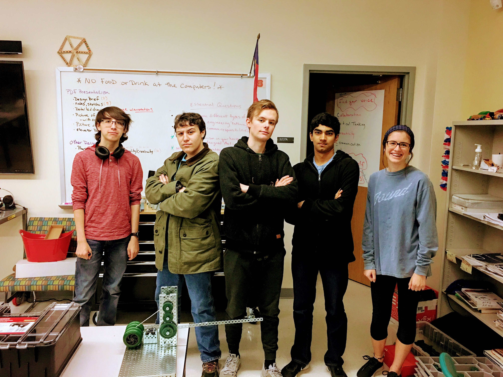

More About Cameron
Cameron has always been forward-thinking. He believes in using his skill in communication and leadership to help shape a better future for the world.
Having always had a passion for Computer Science and Programming from a young age, Cameron has worked on many programming projects, ranging from Hobby to Professional development,
starting at the age of 14.


In his first year of High School, Cameron learned to solve problems following the engineering design process with fellow students in the Academy of Engineering and Advanced Manufacturing.

In his Sophomore Year, Cameron learned the principles of engineering, and continued to grow his skillset and connections in the industry.

In his Junior Year, Cameron worked to build relationships with experts in the Computer Science industry, and continued to expound upon his skillset.

Donec eget ex magna. Interdum et malesuada fames ac ante ipsum primis in faucibus. Pellentesque venenatis dolor imperdiet dolor mattis sagittis magna etiam.